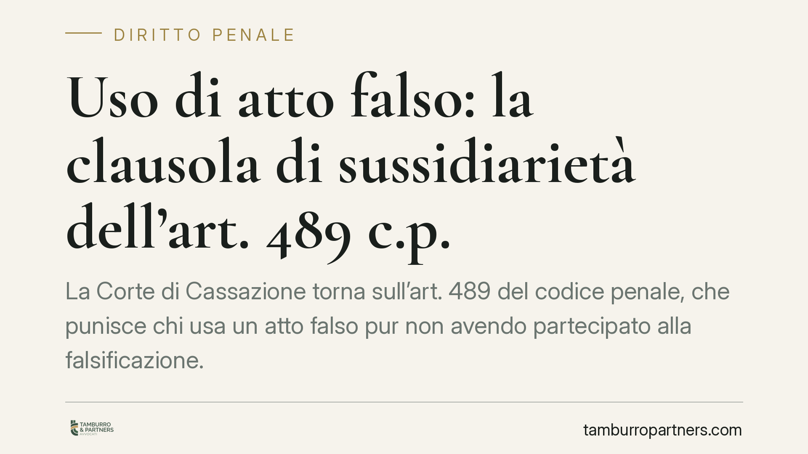

Uso di atto falso: la clausola di sussidiarietà dell'art. 489 c.p.
La Corte di Cassazione torna sull'art. 489 del codice penale, che punisce chi usa un atto falso pur non avendo partecipato alla falsificazione. La clausola di sussidiarietà — "fuori dei casi di concorso" — opera solo quando quel concorso è concretamente punibile, non quando resta una mera ipotesi astratta. Una precisazione con effetti diretti sulla qualificazione dell'accusa e sulla difesa.

Il caso
La vicenda nasce da una pronuncia della Corte d'Appello di Lecce, in riforma di una decisione del Tribunale di Brindisi, sottoposta al vaglio della quinta sezione penale della Cassazione. Il tema è la corretta qualificazione della condotta di chi utilizza un documento falso.
Gli estremi definitivi della pronuncia (Cass. pen., Sez. V) sono in corso di pubblicazione: il principio va quindi letto come orientamento interpretativo, in attesa del deposito integrale delle motivazioni.
Inquadramento normativo
L'art. 489 c.p. punisce l'uso di un atto falso da parte di chi non ha concorso nella sua formazione. La norma si apre con una formula precisa: "fuori dei casi di concorso nella falsità". È la cosiddetta clausola di sussidiarietà, che serve a evitare doppie incriminazioni per il medesimo fatto.
La logica è questa. Chi partecipa alla falsificazione risponde già dei reati di falso documentale previsti dagli artt. 476 e seguenti c.p. (falsità in atti pubblici e assimilati). Per costoro, l'uso successivo del documento è un semplice sviluppo della condotta già punita e non costituisce un reato autonomo. L'art. 489 c.p. si rivolge invece a un soggetto diverso: chi resta estraneo alla fabbricazione del falso ma se ne serve consapevolmente.
Il nodo interpretativo
Il punto affrontato dalla Cassazione riguarda il significato da attribuire a quella clausola. Basta che il concorso nella falsità sia astrattamente ipotizzabile per escludere l'applicazione dell'art. 489 c.p.? Oppure occorre che quel concorso sia concretamente punibile?
La Corte accoglie la seconda lettura. La clausola di sussidiarietà opera — cioè esclude la punibilità per uso di atto falso — soltanto quando il concorso nella falsificazione è concretamente perseguibile a carico del medesimo soggetto. Se il concorso, pur teoricamente configurabile, non è punibile in concreto — ad esempio perché prescritto, perché mancano gli elementi soggettivi, o perché non provato — allora la clausola non scatta e la condotta di utilizzo resta autonomamente sanzionabile ai sensi dell'art. 489 c.p.
La distinzione non è formale. Un conto è la partecipazione astrattamente ipotizzabile alla falsificazione; altro è la sua punibilità effettiva. Solo quest'ultima assorbe l'uso del falso.
Implicazioni pratiche
Per chi è indagato o imputato, la qualificazione incide sull'esito. Se l'accusa contesta il concorso nella falsità ma non riesce a dimostrarlo o quel reato è prescritto, l'imputato può comunque rispondere di uso di atto falso, se ha impiegato consapevolmente il documento. La caduta dell'imputazione più grave non comporta automaticamente l'assoluzione.
Diventa quindi decisivo il piano probatorio. Occorre tenere distinti due profili:
- la partecipazione alla materiale formazione del falso, che riguarda condotte anteriori o contestuali alla fabbricazione del documento;
- la consapevolezza al momento dell'uso, cioè la conoscenza della falsità nell'istante in cui il documento viene presentato o fatto valere.
Sono elementi diversi, con oggetti di prova distinti. Un soggetto può ignorare del tutto come e da chi il documento sia stato falsificato, e tuttavia essere consapevole della sua falsità quando lo utilizza. È su questa consapevolezza che si concentra il rimprovero penale dell'art. 489 c.p.
Cosa fare in concreto
- È opportuno verificare l'origine dei documenti utilizzati, distinguendo la fase della formazione da quella dell'impiego.
- Va accertato se l'eventuale concorso nella falsità sia concretamente punibile o solo astrattamente ipotizzabile: la differenza determina l'applicabilità dell'art. 489 c.p.
- Sul piano probatorio, è utile documentare lo stato di conoscenza del soggetto nel momento dell'uso, elemento centrale della fattispecie.
- La qualificazione giuridica va valutata sin dalla fase delle indagini, quando le impostazioni difensive incidono maggiormente sullo sviluppo del procedimento.
- Occorre monitorare i termini di prescrizione dei reati di falso, poiché la loro estinzione può spostare l'accusa dall'art. 476 c.p. all'art. 489 c.p.
Conclusione
La pronuncia conferma un principio di rigore: la clausola di sussidiarietà non è una via di fuga automatica. L'uso consapevole di un atto falso resta punibile ogni volta che il concorso nella falsificazione, per qualsiasi ragione, non sia concretamente sanzionabile.
---
Contributo informativo a cura di Tamburro & Partners Avvocati - Avv. Giuseppe Tamburro. Non costituisce parere legale.
Ogni condominio ha una storia a sé.
Se gestisci un'amministrazione e vuoi un confronto su una specifica questione condominiale, scrivi allo studio. Ti rispondiamo entro un giorno lavorativo.